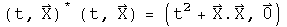
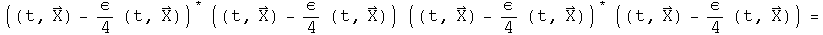
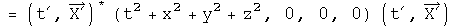
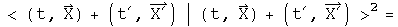

A Complete Inner Product Space with Dirac's Bracket Notation
A mathematical connection between the bracket notation of quantum mechanics and quaternions is detailed. It will be argued that quaternions have the properties of a complete inner-product space (a Banach space for the field of quaternions). A central issue is the definition of the square of the norm. In quantum mechanics:

In this notebook, the following assertion will be examined (star is the conjugate, so the vector flips signs):
The inner-product of two quaternions is defined here as the transpose (or conjugate) of the first quaternion multiplied by the second. The inner product of a function with itself is the norm.
The Positive Definite Norm of a Quaternion
The square of the norm of a quaternion can only be zero if every element is zero, otherwise it must have a positive value.

This is the standard Euclidean norm for a real 4-dimensional vector space.
The Euclidean inner-product of two quaternions can take on any value, as is the case in quantum mechanics for <phi|theta>. The adjective "Euclidean" is used to distinguish this product from the Grassman inner- product which plays a central role in special relativity (see alternative algebra for boosts).
Completeness
With the topology of a Euclidean norm for a real 4-dimensional vector space, quaternions are complete.
Quaternions are complete in a manner required to form a Banach space if there exists a neighborhood of any quaternion x such that there is a set of quaternions y

for some fixed value of epsilon.
Construct such a neighborhood.


An infinite number of quaternions exist in the neighborhood.
Any polynomial equation with quaternion coefficients has a quaternion solution in x (a proof done by Eilenberg and Niven in 1944, cited in Birkhoff and Mac Lane's "A Survey of Modern Algebra.")
Identities and Inequalities
The following identities and inequalities emanate from the properties of a Euclidean norm. They are worked out for quaternions here in detail to solidify the connection between the machinery of quantum mechanics and quaternions.
The conjugate of the square of the norm equals the square of the norm of the two terms reversed.
For quaternions,


These are identical, because the terms involving the cross produce will flip signs when their order changes.
For products of squares of norms in quantum mechanics,

This is also the case for quaternions.





The triangle inequality in quantum mechanics:

For quaternions,



If the signs of each pair of component are the same, the two sides will be equal. If the signs are different (a t and a -t for example), then the cross terms will cancel on the left hand side of the inequality, making it smaller than the right hand side where terms never cancel because there are only squared terms.
The Schwarz inequality in quantum mechanics is analogous to dot products and cosines in Euclidean space.

Let a third wave function, chi, be the sum of these two with an arbitrary parameter lambda.

The norm of chi will necessarily be greater than zero.

Choose the value for lambda that helps combine all the terms containing lambda.


Multiply through by the denominator, separate the two resulting terms and do some minor rearranging.

This is now the Schwarz inequality.
Another inequality:

Examine the square of the norm of the difference between two quaternions which is necessarily equal to or greater than zero.

The cross terms can be put on the other side of inequality, changing the sign, and leaving the sum of two norms behind.


The inequality holds.
The parallelogram law:

Test the quaternion norm


This is twice the square of the norms of the two separate components.
Implications
In the case for special relativity, it was noticed that by simply squaring a quaternion, the resulting first term was the Lorentz invariant interval. From that solitary observation, the power of a mathematical field was harnessed to solve a wide range of problems in special relativity.
In a similar fashion, it is hoped that because the product of a transpose of a quaternion with a quaternion has the properties of a complete inner product space, the power of the mathematical field of quaternions can be used to solve a wide range of problems in quantum mechanics. This is an important area for further research.
Note: this goal is different from the one Stephen Adler sets out in "Quaternionic Quantum Mechanics and Quantum Fields." He tries to substitute quaternions in the place of complex numbers in the standard Hilbert space formulation of quantum mechanics. The analytical properties of quaternions do not play a critical role. It is the properties of the Hilbert space over the field of quaternions that is harnessed to solve problems. It is my opinion that since the product of a transpose of a quaternion with a quaternion already has the properties of a norm in a Hilbert space, there is no need to imbed quaternions again within another Hilbert space. I like a close shave with Occam's razor.